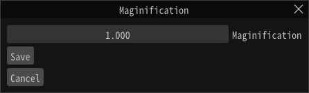

File - Export¶
Default format¶
Exports the effect you are currently editing as an efk file.
The efk file is a play-only binary format that does not contain tool edit information.
Various resource files such as textures are not output, so a separate copy is required.
You can specify the enlargement ratio by specifying the file name of the export destination.
Effekseer package¶
Exports the currently editing effect as an efkpkg file.
An efkpkg file is a package file that contains one or more efkefc files and various resource files.
Specify the file name of the export destination to complete the export.